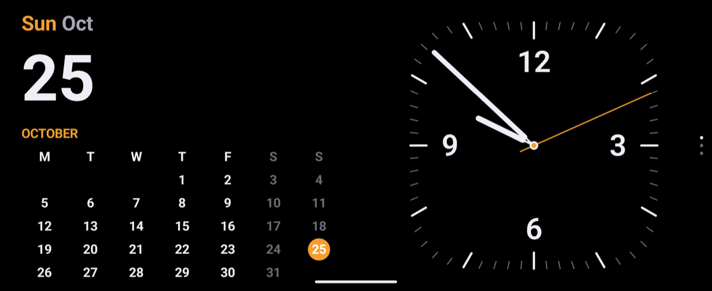
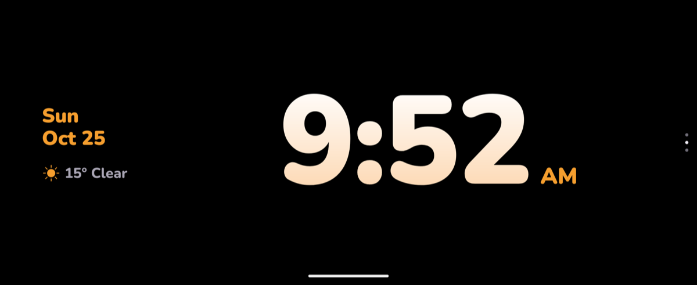
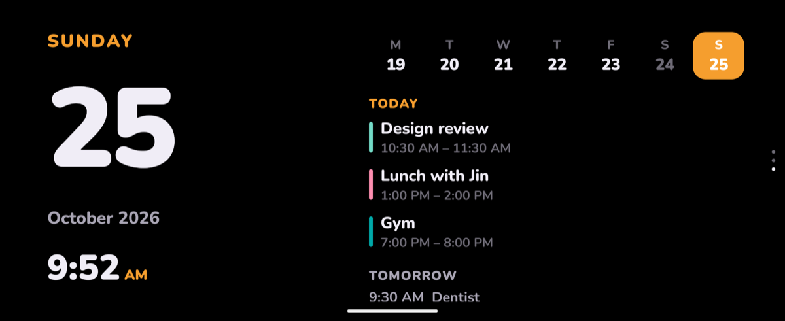
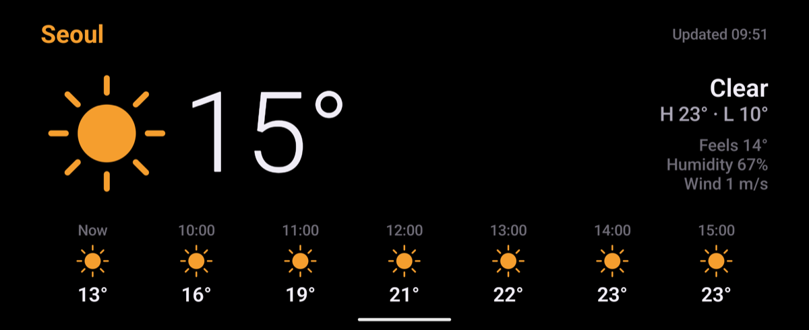
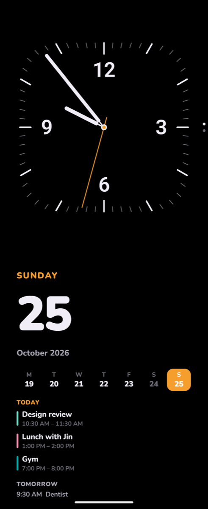
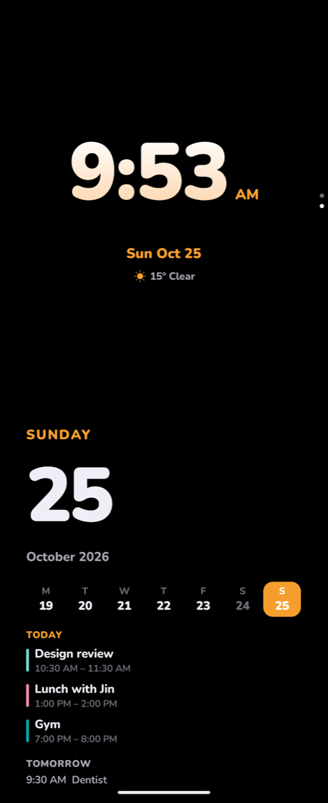
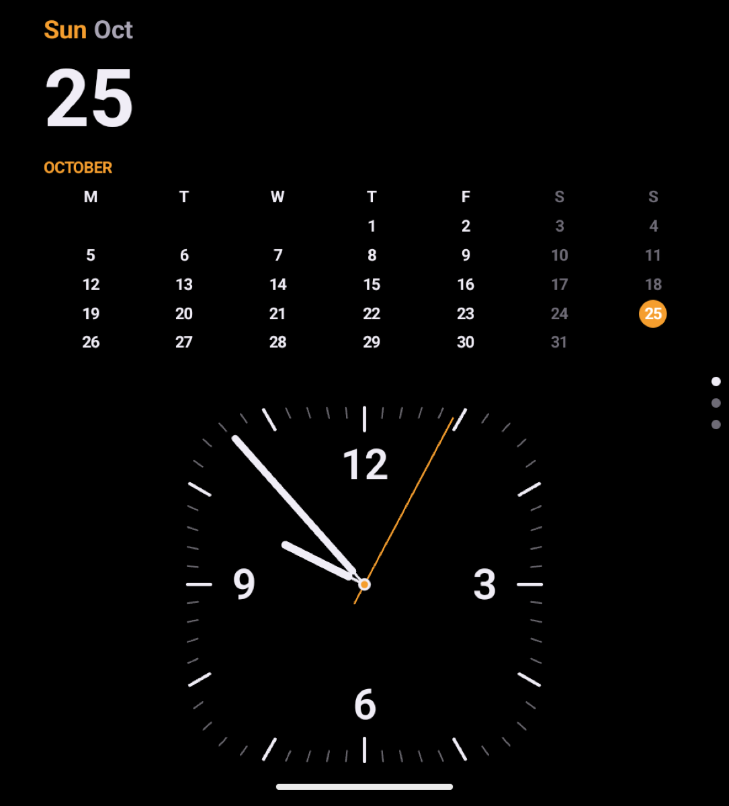
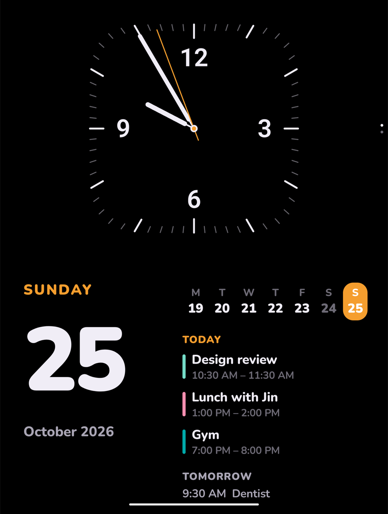

설계 v1 · 2026-10-25
폴드8 와이드용으로 만든 Fold StandBy를 플립에서도 쓰도록 바꾼 설계예요. 새 앱을 따로 만들지 않고, 같은 앱이 화면 모양과 접힌 자세를 보고 배치를 고르게 했어요.
| 화면 | 크기 | 비율 | 스탠바이에서 |
|---|---|---|---|
| 메인 화면 (펼침) | 6.9″ · 2520×1080 | 약 21:9 | 화면 보호기와 앱이 이 화면에 떠요 |
| 커버 화면 (FlexWindow) | 4.1″ · 948×1048 | 거의 1:1 | 화면 보호기가 뜨지 않아요. Good Lock MultiStar로 앱을 띄울 수는 있어요 |
사양 출처: Wikipedia, Android Central. 커버 화면 앱 지원: 9to5Google.
폰을 다 펴서 가로로 눕혀 세운 모양이에요. 아이폰 스탠바이와 가장 가까워요. 화면 비율이 2:1을 넘으면 왼쪽 달력, 오른쪽 시계를 반씩 나눠요. 폴드8 커버 화면(약 1.58:1)은 지금처럼 40:60 그대로예요.




플립을 노트북처럼 반쯤 접어 책상에 세운 모양이에요. 접힘선에서 화면을 정확히 반으로 나눠서, 어떤 글자도 접힘선에 걸치지 않게 했어요.



폴드8도 안쪽 화면을 세로로 들고 반쯤 접으면 같은 배치가 돼요. 예전에는 윗면에 달력+시계, 아랫면에 일정 한 줄이었는데, 이제 윗면 시계 · 아랫면 날짜와 일정으로 바뀌었어요.

플립의 커버 화면에서는 화면 보호기가 뜨지 않아요. 그래서 이번 범위에서는 따로 설계하지 않았어요. Good Lock MultiStar로 앱을 커버 화면에 띄우면 위 그림처럼 날짜·달력 위, 시계 아래로 나오고, 쓰는 데 문제는 없어요.
| 파일 | 바뀐 점 |
|---|---|
ui/ClockFaces.kt | 화면 비율이 2:1 이상이면 달력+시계를 50:50으로 나눔 |
ui/StandbyScreen.kt | 반접기일 때 접힘선에서 반으로 나누고, 윗면은 시계 스타일 2개, 아랫면은 날짜·일정 판. 화면 가림(카메라 구멍) 여백은 윗면에만 |
ui/StyleFaces.kt | 달력 스타일에 시각을 뺄 수 있는 옵션(showTime) |
StandbyActivity.kt | 개발 빌드에서만 반접기 자세를 강제하는 시험용 옵션(--es debugPosture tabletop). 정식 빌드에서는 동작하지 않음 |
에뮬레이터가 반접기 상태를 앱에 알려주지 않아서, 반접기 화면은 시험용 옵션으로 자세를 강제해서 봤어요. 실제 플립에서 자세가 제대로 잡히는지는 폰으로 확인해야 해요.